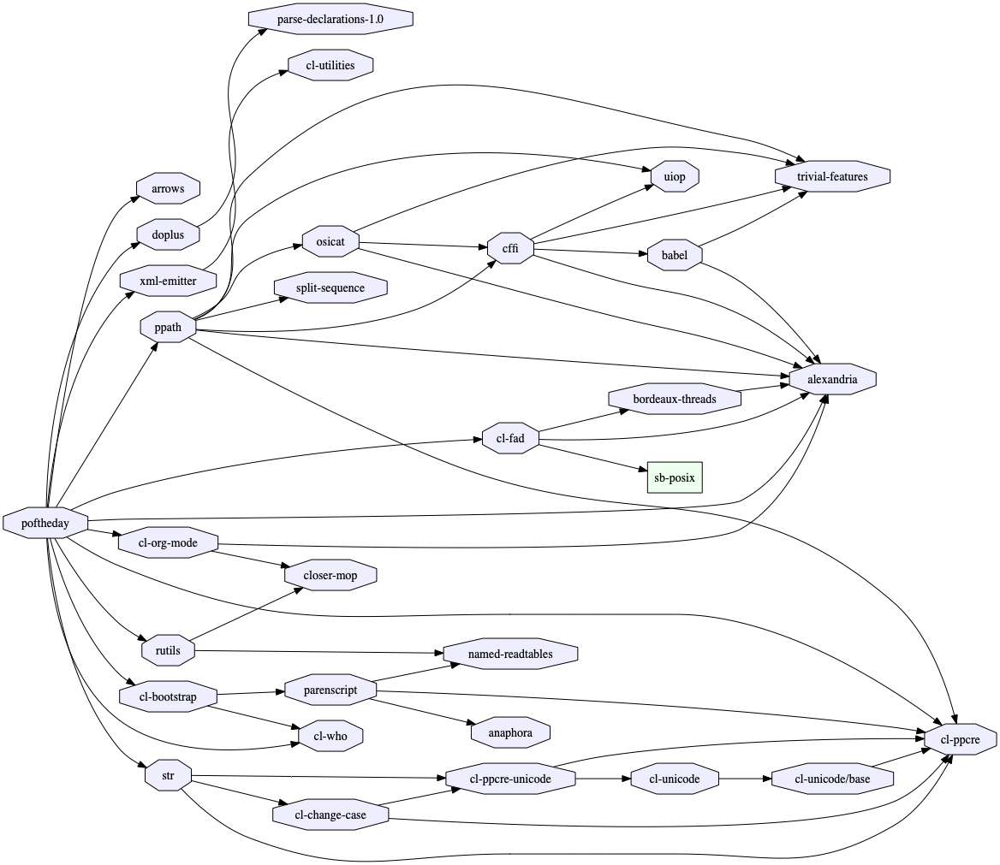
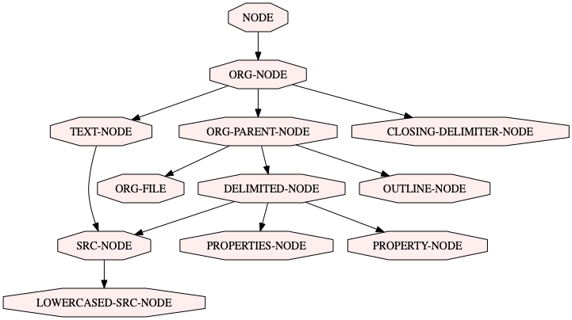

Lisp Project of the Day
asdf-viz
You can support this project by donating at:


asdf-viz
| Documentation | 😀 |
| Docstrings | 🥺 |
| Tests | 😀 |
| Examples | 😀 |
| RepositoryActivity | 😀 |
| CI | 😀 |
Today I decided it will be more interesting to investigate Lisp systems which I already have as dependencies of my projects. That is why I've remembered about asdf-viz.
ASDF-VIZ is able to render a graph of ASDF systems. It can be installed as Unix scripts using Roswell or used from the REPL.
Also, you'll need a Graphviz program installed.
Now we'll render a graph of all dependencies of the poftheday system:
POFTHEDAY> (setf cl-dot:*dot-path* "/usr/local/bin/dot")
POFTHEDAY> (asdf-viz:visualize-asdf-hierarchy
"docs/media/0063/systems.png"
(list (asdf:find-system :poftheday)))Here is the result:

Interestingly, asdf-viz not only can draw a system's dependencies but also class hierarchies and call graphs.
Here is a small example, how to render a class hierarchy:
POFTHEDAY> (asdf-viz.class-hierarchy:visualize-class-hierarchy
"docs/media/0063/classes.png"
(list 'cl-org-mode::node))And this is the resulting graph:

I think it might be useful to integrate asdf-viz into IDE.
Probably Emacs might show graphs in a separate buffer? Or LispWorks IDE is able to do this?
P.S. – next system will be chosen from the dependencies of the poftheday system.
Brought to you by 40Ants under